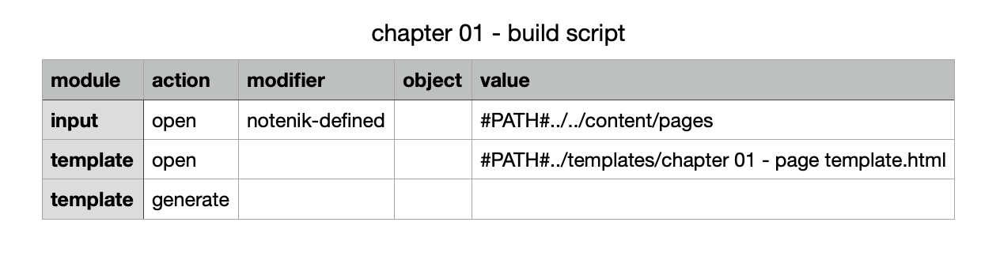

1. Zero to internet: your first website ↑
1.7. Review the Script File
Now let’s look at the script file we used.
You’ll find this in the factory/scripts folder.
Again, you can open it using any text editor. However a Notenik script file is in tab-delimited format, with its data in columns, so it may be easier to view when opened with a spreadsheet editor, such as Apple’s Numbers app.
Here’s what the script file looks like when viewed in Numbers.

The first row contains column headings. These are always the same.
The second row opens the pages collection as input.
The third row opens the template file we just reviewed.
And the fourth line tells Notenik to merge the content into the template, producing whatever output is specified within the template.
(Note that the #PATH# constant tells Notenik to interpret what follows as a relative path, starting from the location of the script file.)
So now you’ve seen everything used to produce our starting web page!
Next: 2. Add content to your website